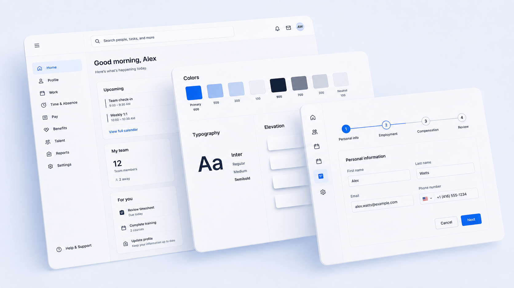

U.S. Web Design System
100+ agencies · 1B+ page views annually
Built core components and helped shape long-term system architecture designed for durability across the federal government.
Explore USWDSDesign systems · Design technology · AI
I design and lead systems that shape how teams build, decide, and scale products. From launching the U.S. Web Design System to enterprise platforms, my work turns design systems into operational infrastructure across complex organizations.
02 / Selected work
View the broader body of work100+ agencies · 1B+ page views annually
Built core components and helped shape long-term system architecture designed for durability across the federal government.
Explore USWDS
Lead, foundations & system architecture
Component architecture, token systems, and contribution models spanning 30+ product teams.
Case study available upon request5 practice areas · Cross-functional adoption
Operationalized inclusive design across design, engineering, and product through role-based guidance.
View the guide03 / About
Design systems aren’t just UI. They’re decision-making systems.
I work at the intersection of design, engineering, and systems thinking, building the structures that determine how products are made. I’m particularly interested in where systems go next: AI-assisted workflows, tighter design-to-code pipelines, and new forms of system intelligence that make design logic explicit, traceable, and scalable.
Architecture & long-term strategy
Audits & system evolution
Patterns for complex products
Token systems & component APIs
Design-to-code translation
Production fidelity
Governance & enablement
Documentation strategy
Contribution models
AI-augmented workflows
Design-to-code pipelines
Explicit, traceable design logic
04 / Writing
View full archive05 / Speaking